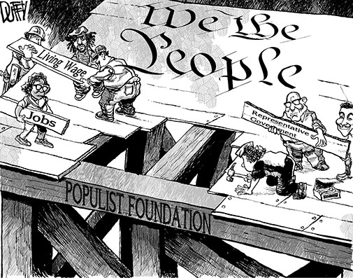

By the 1820’s there was sweeping change throughout America. The Industrial revolution brought sweeping change to the young nation and its economy. This change not only altered the way that the government handled trade, but this revolution in manufacturing also brought stark changes to the everyday lives of millions of Americans (“The Industrial Revolution in the United States”). Protective tariffs were put into place to protect American manufacturers from British competition and this is what set off the industrialization of early America (though this would later cause turmoil and lead to the Nullification Crisis) (Boundless. “Protective Tariffs.”)
With this sweeping change in the early American economy had opened doors for many American’s that previously struggled to gain a foothold on the social ladder — particularly the poor. Post-Industrial Revolution America saw the rise of the wage worker and factory job. Before the Industrial Revolution the American manufacturing sector (as limited as it was) was limited to the crafts of individual artisans and farmers. Things changed after the Industrial Revolution, people could make a living off of factory work alone. Workers no longer needed to be skilled artisans, rather, anyone could enter into factory work and make a living. (Bessen. "What looms tell us about workers, wages.")
The epitome of the factory movement is Lowell Mill. Lowell was one of the first examples of a factory community. Lowell was unique in the fact that it offered its workers a holistic environment with many opportunities for advancement. One worker kept a diary on her day-to-day life at the mill containing excerpts such as:
“March 12 - Morning. Attending Mr. Woodman's church on Merrimac St. Was less pleased with the service than any other save the Catholic that I have attended. Heard Dr. Robinson's experience at the City Hall”
“March 21 - Went to the Museum”
“April 3 - Attended Mr. Grey's Geological lecture at the John St. vestry.” (Susan. Caught Between Two Worlds: The Diary of A Lowell Mill Girl)
These sorts of journal entries depict a life of culture and even education. Of course most of their time was still spent working at the mills, but working at Lowell provided access to things historically out of reach to the poor and women.
While the industrial revolution was providing the lower class with opportunities for economic advancement, the political arena was transforming as well. The 1840’s saw the first expansion of suffrage in American history. By 1840 nearly 90% of white men possessed the right to vote ("The Expansion of the Vote: A White Man's Democracy."). Prior to the expansion of suffrage throughout the early 1800’s, only landowners had the right to vote.
Naturally, this huge expansion of the voting population led to the rise of new politics, in this case, Populism. While the majority of presidents preceding Jackson saw themselves as valiant leader and were often perceived as part of the elite, Jackson, the result of a radically new American democracy, saw himself as one of the people. He made it clear that he would disrupt the old way of things and usher in a dramatically new vision for the future.
“The recent demonstration of public sentiment inscribes, on the list of executive duties, in characters too legible to be overlooked, the task of reform; which will require, particularly, the correction of those abuses that have brought the patronage of the Federal Government into conflict with the freedom of elections.” (Andrew Jackson)
Here, Jackson directly challenged the establishment and banks on the support of “public sentiment” to execute this. He does not see himself as a worker of the government, but rather worker for the people. This trend toward populism and democratization provided millions of men with the opportunity to have a say in politics where their voices had previously been silenced.
In conclusion, the early 1800’s brought about massive economic and political change that ultimately enabled the lower and middle classes to advance in the new country. The shift toward wage labor and industrialization allowed for new economic opportunity available even to those without marketable skills or land, and the democratization of politics alongside the expansion of suffrage gave this new middle-class the opportunity to have a voice. Ultimately these new developments were another step toward the ideal that is the American Dream.